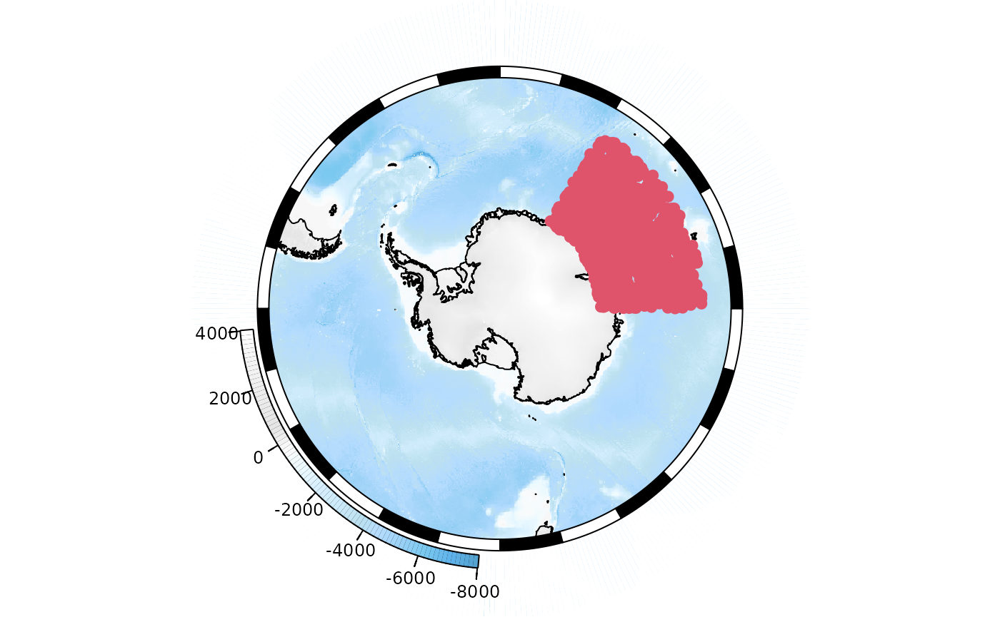
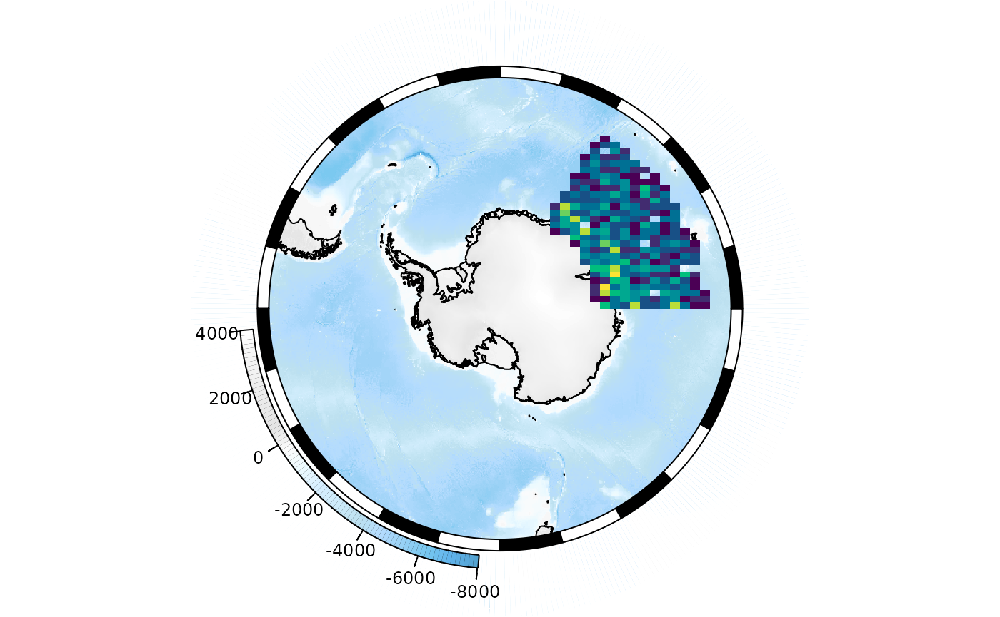
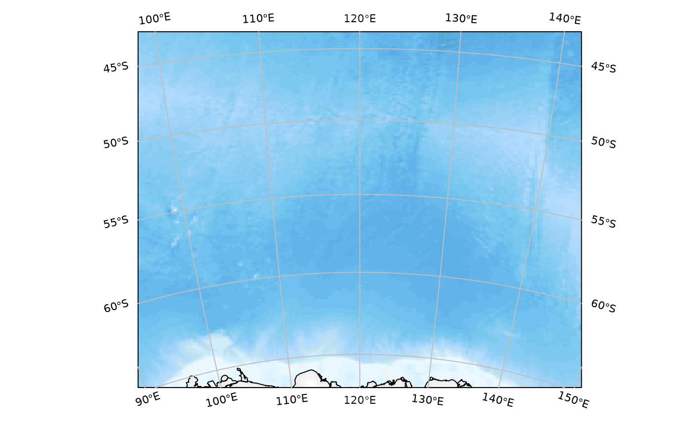
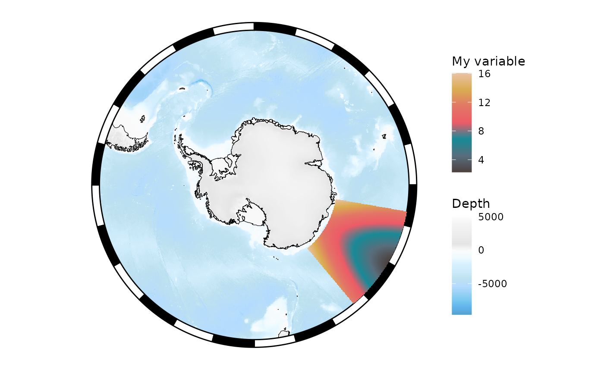
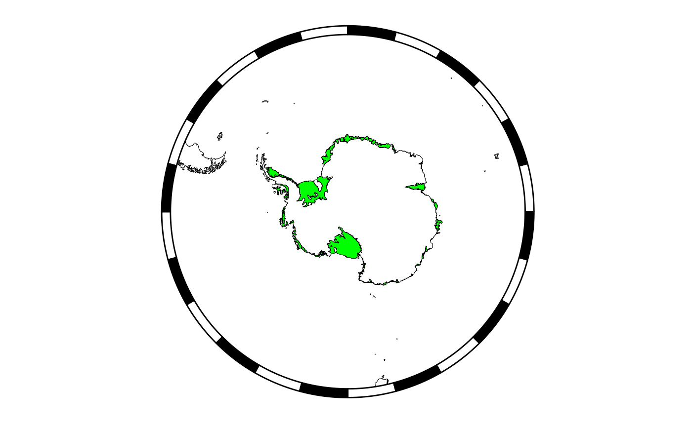

SOmap-introduction
Ben Raymond, Michael Sumner, Dale Maschette, Anton Van de Putte
Source:vignettes/SOmap-introduction.Rmd
SOmap-introduction.RmdSOmap introduction
This vignette was adapted from the SCAR-EGABI Tools for Southern Ocean Spatial Analysis and Modelling course and Mapping in R workshop.
Background
Maps in R
The oldest and most core general mapping package in R is the
maps package. It has a simple whole-world coastline data
set for immediate use.
maps::map()The data underlying this live map is available by capturing the output as an actual object. Notice that the coastline for Antarctica does not extend to the south pole, and that parts of Russia that are east of 180 longitude are not in the western part of the map.
m <- maps::map(plot = FALSE)
lonlat <- cbind(m$x, m$y)
plot(lonlat, pch = "+", cex = 0.4, axes = FALSE)
lines(lonlat, col = "dodgerblue")
abline(h = c(-90, 90), v = c(-180, 180))Exercises
- How can we find the longitude and latitude ranges of the maps data
m? - Can we draw polygons with a fill colour with the maps package?
Answer 1: range(m$x, na.rm = TRUE)
range(m$y, na.rm = TRUE) also m$range
Answer 2: polygon(lonlat, col = "grey") does not work,
but maps::map(fill = TRUE, col = "grey") does seem to
work.
What’s going on? Look at the very south-eastern corner of the map. The “coastline” has been extended to the very south boundary of the available area.
plot(0, type = "n", axes = FALSE, xlab = "", ylab = "", xlim = c(-150, 180), ylim = c(-90, -60))
rect(xleft = -180, ybottom = -90, xright = 180, ytop = 90, border = "darkred", lwd = 4, lty = 2)
maps::map(add = TRUE, col = "dodgerblue", lwd = 3)
The old maps coastline does not extend to 90S and it does not traverse the southern boundary.
One reason for this is that if we choose a projection where the east and west edges of the Antarctic coastline meet then we get what looks a fairly clean join.
## scale factor
f <- 3e6
plot(terra::project(lonlat, to = "+proj=laea +lat_0=-90 +datum=WGS84", from = "EPSG:4326"), asp = 1, type = "l",
xlim = c(-1, 1) * f, ylim = c(-1, 1) * f, xlab = "", ylab = "")
Let’s use the maps data!
In m we have the maps data structure, and this looks
promising.
str(m)
#> List of 4
#> $ x : num [1:82403] -69.9 -69.9 -69.9 -70 -70.1 ...
#> $ y : num [1:82403] 12.5 12.4 12.4 12.5 12.5 ...
#> $ range: num [1:4] -180 190.3 -85.2 83.6
#> $ names: chr [1:1627] "Aruba" "Afghanistan" "Angola" "Angola:Cabinda" ...
#> - attr(*, "class")= chr "map"
mp <- m
pxy <- terra::project(lonlat, to = "+proj=laea +lat_0=-90 +datum=WGS84", from = "EPSG:4326")
mp$x <- pxy[,1]
mp$y <- pxy[,2]
mp$range <- c(range(mp$x,na.rm = TRUE), range(mp$y, na.rm = TRUE))
mp$range
#> [1] -12709814 12704237 -12576156 12470787
plot(c(-1, 1) * f, c(-1, 1) * f, type = "n", asp = 1)
maps::map(mp, add = TRUE)
## but it doesn't take much to go awry
plot(c(-1, 1) * f, c(-1, 1) * f, type = "n", asp = 1)
maps::map(mp, add = TRUE, fill = TRUE, col = "grey")The problem is that the maps database has enough internal structure
to join lines correctly, with NA gaps between different
connected linestrings, but not enough to draw these things as polygons.
A similar problem occurs in the default projection.
We have to look quite carefully to understand what is happening, but this is wrapping around overlapping itself and so close to the southern bound we barely notice.
plot(0, type = "n", axes = FALSE, xlab = "", ylab = "", xlim = c(-180, -110), ylim = c(-90, -60))
rect(xleft = -180, ybottom = -90, xright = 180, ytop = 90, border = "darkred", lwd = 4, lty = 2)
maps::map(add = TRUE,col = "grey", fill = TRUE)
maps::map(col = "grey", fill = TRUE)
mpmerc <- m
pxy <- terra::project(lonlat, to = "+proj=merc +datum=WGS84", from = "EPSG:4326")
mpmerc$x <- pxy[,1]
mpmerc$y <- pxy[,2]
mpmerc$range <- c(range(mpmerc$x,na.rm = TRUE), range(mpmerc$y, na.rm = TRUE))
mpmerc$range
#> [1] -20037508 20037508 -20179524 18351859
## the catastrophe made a little clearer
plot(0, xlim = range(mpmerc$range[1:2]), ylim = c(mpmerc$range[1], 0))
maps::map(mpmerc, fill = TRUE, col = "grey", add = TRUE)SOmap
The SOmap package is intended to solve some of these
problems, and provide an easier way to produce nice-looking maps of
Antarctica and the Southern Ocean. It is primarily focused on maps in
polar stereographic projection (although the SOmap_auto
function extends this to other projections). SOmap won’t
necessarily get you exactly the map you want in every circumstance, but
the idea is that in most cases it should get you close enough, and if
need be you can make modifications to suit your exact purposes.
Please bear in mind that SOmap is still in development,
and so its functionality (function parameters and/or behaviour) may
change.
By default, SOmap works with base graphics (and
associated functionality from packages such as raster and
sp). It is also possible to work with
ggplot2-based graphics, as described below.
Start by installing the SOmap package if you haven’t
done so already:
remotes::install_github("AustralianAntarcticDivision/SOmap")Then load the package:
library(SOmap)
#> Loading required package: raster
#> Loading required package: sp
## also define a colour map to use for some examples
my_cmap <- colorRampPalette(c("#4D4140", "#596F7E", "#168B98", "#ED5B67",
"#E27766", "#DAAD50", "#EAC3A6"))(51)Circumpolar maps
A basic circumpolar map in polar stereographic projection. Here we
save our map to the base_plot variable, so that we can use
it again later without re-generating the map from scratch each time:
SOmanagement() provides a number of contextual layers
such as MPA boundaries and management zones.
SOmap(trim = -40) ## plot to 40S
## add the exclusive economic zones management layer
SOmanagement(eez = TRUE)
Adding points
## some longitude/latitude data
library(sp)
my_points_ll <- data.frame(lon = seq(0, 350, by = 10), lat = -55, z = runif(36))
coordinates(my_points_ll) <- c("lon", "lat")
projection(my_points_ll) <- "+proj=longlat +datum=WGS84"Our data need to be reprojected to match our map before plotting. The
SOproj function does this:
## reproject to our SOmap projection
my_points <- SOproj(my_points_ll)
## and plot
plot(base_map)
plot(my_points, col = "blue", add = TRUE)
Or use SOplot to reproject and plot in one step:
Adding raster layers
First let’s construct some artificial raster data (in longitude-latitude space) for demonstration purposes:
library(raster)
temp <- as.data.frame(expand.grid(lon = seq(100, 140, by = 0.25),
lat = seq(-65, -45, by = 0.1)))
temp$val <- sqrt((temp$lon - 120)^2/3 + (temp$lat - -40)^2/5)
## create raster object
xr <- rasterFromXYZ(temp)
projection(xr) <- "+proj=longlat +datum=WGS84"SOplot will reproject and plot this for us:
The legend is out of character with the rest of the map. We can use
SOleg to fix that:
## draw the base map
plot(base_map)
## add our raster
SOplot(xr, legend = FALSE, col = my_cmap)
## add the legend
SOleg(xr, position = "topright", col = my_cmap, ticks = 6,
type = "continuous", label = "My variable")OK, well that worked but clearly the labels need tidying up. The
easiest way is probably to set the number of decimal places in the label
values via the rnd parameter:
plot(base_map)
SOplot(xr, legend = FALSE, col = my_cmap)
SOleg(xr, position = "topright", col = my_cmap, ticks = 6, rnd = 2,
type = "continuous", label = "My variable")Alternatively, we could explicitly set the colour range and labels.
## draw the base map
plot(base_map)
## add our raster, controlling the colour range to span the values 0 to 30
colour_breaks <- seq(0, 30, length.out = length(my_cmap) + 1)
SOplot(xr, legend = FALSE, col = my_cmap, breaks = colour_breaks)
## add the legend, again controlling the colour range
label_breaks <- seq(0, 30, length.out = 7)
SOleg(position = "topright", col = my_cmap, breaks = label_breaks,
type = "continuous", label = "My variable")Note that if we don’t want to show the bathymetric legend, we may run into problems:
SOmap(bathy_legend = FALSE) ## suppress the bathy legend
SOleg(position = "topright", col = my_cmap, breaks = label_breaks,
type = "continuous", label = "My variable")The legend has been chopped off because the layout has not left
enough space around the map for the curved legend. There are a couple of
ways around this. The elegant way is to specify
bathy_legend = "space", which will leave appropriate space
for a bathymetry legend but not actually plot it. This will also have
the effect of leaving adequate space for other legends:
SOmap(bathy_legend = "space")
SOleg(position = "topright", col = my_cmap, breaks = label_breaks,
type = "continuous", label = "My variable")The second, rather hackier way is to generate the SOmap
object with the bathymetric legend, but then remove the
bathymetric legend before plotting:
temp <- base_map
temp$bathy_legend <- NULL ## remove the bathy legend
plot(temp)
SOleg(position = "topright", col = my_cmap, breaks = label_breaks,
type = "continuous", label = "My variable")
See the Modifying map objects section below for more details on modifying map objects.
Multiple rasters:
Create a raster from points
Let’s say that we have a large number of points that we wish to add to the map. We could simply add them:
points <- data.frame(lon = runif(1000, min = 30, max = 90), lat = runif(1000, min = -70, max = -50))
plot(base_map)
SOplot(x = points$lon, y = points$lat, pch = 19, col = 2)
However, the overlap of the points reduces the utility of the map.
One option is to create a density layer, showing the number of points
that fall into each cell of a raster grid. The SObin
function can do this for us:
plot(base_map)
SObin(x = points$lon, y = points$lat, dim = c(100, 100),
col = hcl.colors(100, "Viridis"), legend = FALSE, add = TRUE)
Non-circumpolar maps
The SOmap_auto function will take your input data and
make a guess at an appropriate projection and extent to use. Note that
this is not always going to guess the best projection and
extent, so you should view it as a starting point from which you can
generate a map to your exact requirements.
Use the elephant seal track data bundled with the package:
ellie <- SOmap_data$mirounga_leonina
## construct and plot the map
SOmap_auto(ellie$lon, ellie$lat)
Just a blank map to which you could add other things:
SOmap_auto(ellie$lon, ellie$lat, input_points = FALSE, input_lines = FALSE)You can pass a raster as input data, but note that it won’t plot the raster (it uses its extent to infer an appropriate extent for the map):
SOmap_auto(xr)
But we can add the raster if we wish:
SOmap_auto(xr)
SOplot(xr, col = my_cmap)We can force a particular projection:
SOmap_auto(xr, target = "laea", centre_lon = 147, centre_lat = -42)
SOplot(xr, col = my_cmap)
Same but by supplying a full proj4 string to target:
SOmap_auto(xr, target = "+proj=laea +lat_0=-42 +lon_0=147")
SOplot(xr, col = my_cmap)See the SOmap_auto vignette for more examples.
Plotting via ggplot2
The SOmap and SOmap_auto functions do their
plotting using base graphics. If you are more comfortable working with
ggplot2, this is also possible. The SOgg
function takes an object created by one of those functions (using base
graphics) and converts it to use ggplot2 graphics instead.
As with other SOmap functions, this returns an object (of
class SOmap_gg or SOmap_auto_gg) that contains
all of the information needed to generate the map. Printing or plotting
this object will cause it to construct a ggplot object.
Printing or plotting that object will cause it to be drawn to
the graphics device, just like any other ggplot object.
myplotgg <- SOgg(base_map) ## creates a SOmap_gg object
class(myplotgg)
#> [1] "SOmap_gg"
my_ggplot <- plot(myplotgg) ## creates a ggplot object
class(my_ggplot)
#> [1] "gg" "ggplot"
plot(my_ggplot) ## plot itOr in one step (this will cause myplot to be converted to SOmap’s internal gg format, then a ggplot object constructed from that, then that object will be plotted):
SOgg(base_map)
Modifying map objects (advanced usage)
The goal of SOmap is to make it fairly easy to produce a
fairly-good-looking map that will be adequate for most mapping
requirements. It will never be possible to automatically produce a
perfect map in every circumstance, but the aim is to
have a low-effort way of getting fairly close most of the time.
This section describes some approaches to modifying a map to get it
closer to your particular needs. Be warned: depending on the exact
modifications needed, this might get you pretty close to the crumbling
edge of SOmap development. In particular, anything that
requires modifying the internal structure of an SOmap
object may change in the future (with luck, we’ll make this sort of
thing easier - but we’re not there yet.)
Modifying base graphics maps
Calls to SOmap(), SOmanagement(),
SOmap_auto() return an object of class SOmap,
SOmap_management, or SOmap_auto. These objects
contain all of the data and plotting instructions required to draw the
map. Calling print() or plot() on one of these
objects will cause that code to be executed, and the object to be drawn
in the current graphics device. Hence, calling SOmap()
directly without assigning the result to a variable will make
it appear in the graphics device, because the returned object is being
printed to the console (and thus triggering the print
method). But you can also assign the result to a variable,
e.g. myplot <- SOmap() and then explicitly plot the
object with plot(myplot). The advantage of this is that you
can potentially manipulate the myplot object to make
changes to the map before plotting it.
Note, this is likely to be fragile. Proceed at your own risk!
mymap <- base_map
names(mymap)
#> [1] "projection" "target" "straight" "trim"
#> [5] "bathy" "box" "plot_sequence" "coastline"
#> [9] "ice" "outer_mask" "bathy_legend" "border"The object contains a plot_sequence component, which
defines the order in which each part of the plot is drawn. The other
components of the object contain the code required to draw each part.
Take e.g. the ice component (this is the ice shelves, glacier tongues,
etc). This is a list (in this case with only one element). Each element
of the list is an object of class SO_plotter, which is a
SOmap-specific object that specifies a function to run along with
arguments to pass to it:
str(mymap$ice)
#> List of 1
#> $ :List of 2
#> ..$ plotfun : chr "plot"
#> ..$ plotargs:List of 4
#> .. ..$ x :sfc_POLYGON of length 354; first list element: List of 1
#> .. .. ..$ : num [1:5, 1:2] 1026000 1021994 1021935 1022981 1026000 ...
#> .. .. ..- attr(*, "class")= chr [1:3] "XY" "POLYGON" "sfg"
#> .. ..$ col : logi NA
#> .. ..$ border: chr "black"
#> .. ..$ add : logi TRUE
#> ..- attr(*, "class")= chr "SO_plotter"We can modify the function and/or its arguments:
mymap$ice[[1]]$plotargs$col <- "green"
plot(mymap)We can remove entire components, either by setting the component to
NULL or removing its name from the
plot_sequence:
temp <- mymap
temp$coastline <- NULL ## set the coastline object to NULL
temp$plot_sequence <- setdiff(temp$plot_sequence, "ice") ## remove "ice" from plot_sequence
plot(temp) ## map without coastline or ice shownBut note that some elements are required. In particular, the
bathymetry layer can’t currently be removed because the code that draws
this is also the code that creates the plot page via
plot.new(). The code below would fail outright if there was
no existing existing plot. If there was an existing plot in the graphics
device, this code would run but give unpredictable results because it
would draw on top of the previously-setup plot:
## code not run here
temp <- mymap
temp$bathy <- NULL
plot(temp)One way around this would be to simply replace all of the bathymetric
data values with NAs. The plotting code would still have
the extent of the bathymetric layer that it needs in order to set up the
plot, but no data would be shown:
temp <- mymap
## the bathy data is held in temp$bathy[[1]]$plotargs$x
## and it's a raster, so we can set its values to NA with
raster::values(temp$bathy[[1]]$plotargs$x) <- NA_real_
temp$bathy_legend <- NULL
plot(temp)We could also replace the bathymetry data with another raster object. Note that we do need to be careful about the extent and projection of this raster. For example, replacing the bathymetry raster with the ice raster (which has the same polar stereographic projection but smaller extent) gives:
temp <- mymap
temp$bathy[[1]]$plotargs$x <- ice
temp$bathy_legend <- NULL
plot(temp)It’s chopped off because the extent of the ice raster is being used to set the plot extent. But if we extend the ice raster to match the map extent:
Combining map objects
A new function in SOmap version 0.6 is SOmerge, which
can take separate objects and combine them into a single map. For
example:
mymap <- SOmap(bathy_legend = "space")
mylegend <- SOleg(x = runif(100), position = "topright", col = hcl.colors(80, "Viridis"),
breaks = c(0.1, 0.2, 0.5, 0.9), trim = -45, label = "Thing",
rnd = 1, type = "continuous")
mymgmt <- SOmanagement(eez = TRUE, basemap = mymap)
merged <- SOmerge(mymap, mymgmt, mylegend)
plot(merged)Modifying ggplot maps
We can modify ggplot2-based maps at two levels.
Modifying the ggplot object.
Remember that printing or plotting a SOmap_gg object
produces a ggplot object. This can be modified by adding
e.g. layers or themes just like a normal ggplot. Remember
to load the ggplot2 library now that we are using
ggplot2 functions directly.
library(ggplot2)
my_ggplot + geom_point(data = as.data.frame(my_points), aes(coords.x1, coords.x2, colour = z), size = 3) +
scale_colour_distiller(palette = "Spectral")Multiple rasters or multiple sets of points gets tricky if they are
on different scales, because ggplot2 is only designed to
work with a single colour scale per geometry type. However, the
ggnewscale package can be used to add multiple fill or
colour scales.
library(ggnewscale)
plot(SOgg(SOmap(straight = TRUE))) +
new_scale_fill() +
geom_raster(data = as.data.frame(SOproj(xr), xy = TRUE),
aes(x = x, y = y, fill = val)) +
scale_fill_gradientn(colors = my_cmap, na.value = NA, name = "My variable")
Modifying the SOmap_gg object
SOmap_gg objects are similar in structure to
SOmap objects, in that they contain all of the data and
plotting instructions required to draw the map:
names(myplotgg)
#> [1] "projection" "target" "straight" "trim"
#> [5] "init" "bathy" "coord" "plot_sequence"
#> [9] "scale_fill" "bathy_legend" "coastline" "ice"
#> [13] "axis_labels" "theme" "border"However, instead of base plotting functions, SOmap_gg
objects use ggplot2 function calls, e.g.:
myplotgg$ice[[1]]$plotfun
#> [1] "ggplot2::geom_sf"We can modify these functions and/or arguments in a similar manner to
SOmap objects.
myplotgg$ice[[1]]$plotargs$fill <- "green"
plot(myplotgg)Or remove the bathymetric raster layer:
temp <- myplotgg
temp$bathy <- NULL
temp$bathy_legend <- NULL
plot(temp)
Or replace it with a different raster (use the ice
raster as an example):
temp <- myplotgg
## convert ice raster to suitable data.frame
ice_raster_as_df <- raster::as.data.frame(SOproj(ice), xy = TRUE)
names(ice_raster_as_df)[3] <- "ice"
## add this to our object in place of bathy
temp$bathy <- SO_plotter(plotfun = "ggplot2::geom_raster",
plotargs = list(data = ice_raster_as_df,
mapping = aes_string(fill = "ice")))
## change the colour scale
temp$scale_fill[[1]]$plotargs <- list(colours = my_cmap, na.value = "#FFFFFF00", guide = "none")
## remove the bathy legend
temp$bathy_legend <- NULL
plot(temp)Other SOmap gotchas
Some other things worth noting.
Automatic printing and for-loops
If you type a variable/object name directly into the console then it
triggers that object’s print method automatically. Typing
SOmap() at the console returns an object of class
SOmap, and because it’s happening at the console that
object’s print method is called, which causes the map to be
plotted in the current graphics device.
However, R turns off automatic printing inside for loops
and functions. So this code:
for (i in 1:5) {
SOmap_auto()
}won’t produce anything, because the print method never
gets called. If you are generating maps using loops, you will need to
explicitly call the print method:
for (i in 1:5) {
print(SOmap_auto())
}Supporting data for maps
When constructing maps, we commonly want to show features like oceanographic fronts, ice extent, coastline, place names, and MPA boundaries. There are a few sources of such data:
- some layers are bundled into
SOmap, see theSOmap::SOmap_dataobject - antanym provides access to the SCAR Composite Gazetteer of place names
- the quantarcticR package provides access to Quantarctica data layers.